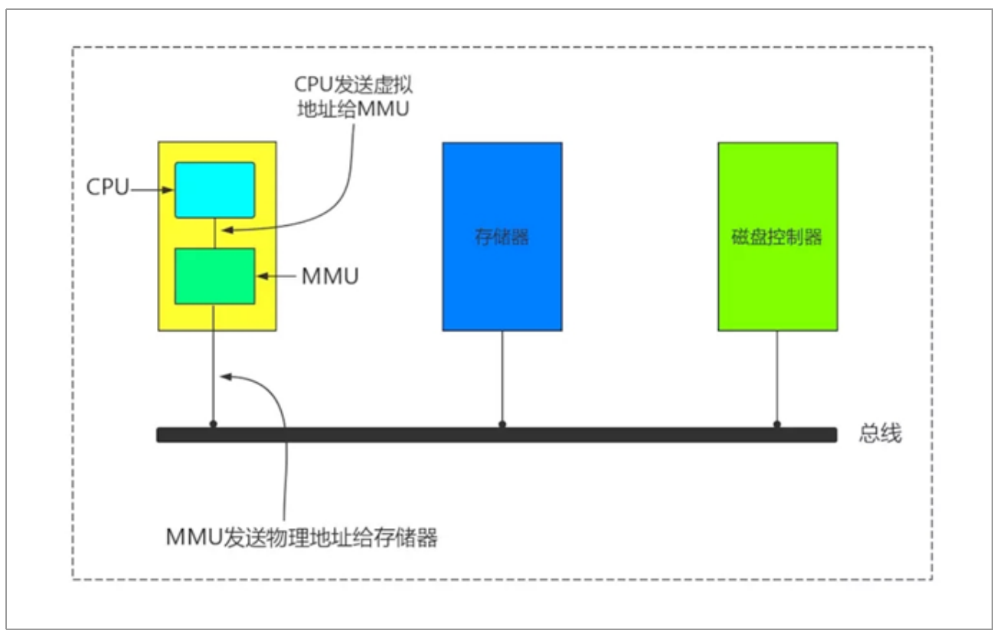

内存
一、概念
内存里存放的都是电信号，断电数据则丢失，相当于人脑失去记忆
cpu是从内存中取出指令来运行的，运行指令产生的数据也会放入内存中，所以内存又称之为主存，因为程序运行过程中产生的数据都是先存放于内存中
二、物理地址空间和虚拟地址空间
MMU：Memory Management Unit 负责虚拟地址转换为物理地址
程序在访问一个内存地址指向的内存时，CPU不是直接把这个地址送到内存总线上，而是被送到MMU（Memory Management Unit),然后把这个内存地址映射到实际的物理内存地址上，然后通过总线再去访问内存，程序操作的地址称为虚拟内存地址
TLB：Translation Lookaside Buffer 翻译后备缓冲区，用于保存虚拟地址和物理地址映射关系的缓存
扩展物理地址空间：插内存条按照奇数或偶数的插，不要按着1234的顺序插

三、物理内存与虚拟内存
每个进程在执行时都有自己的地址空间，这个地址空间其实就是 Linux 内核根据需要给进程分配的一个内存空间（区域）来作为当前进程的工作区，也称为进程的内存空间。这个地址空间包括了程序的指令、数据、堆栈、共享库和其他资源。操作系统负责分配和管理每个进程的地址空间，确保进程之间不会相互干扰。
当操作系统启动一个进程时，它会将进程的可执行文件加载到进程的地址空间中，使进程能够执行其中的指令。这包括将程序的代码段加载到内存中，为进程分配数据段和堆栈，以及加载所需的共享库等。尽管进程的地址空间通常是隔离的，但操作系统也允许进程之间共享内存区域，以便进行进程间通信（IPC）。这种共享可以通过共享内存、内存映射文件等机制来实现。
然而内存又涉及到两个概念，物理内存（Physical Memory）与虚拟内存（Virtual Memory）。所谓的物理内存就是计算机系统中实际存在的硬件内存，通常是 RAM（随机访问存储器）的形式。它是计算机用于存储和访问数据、指令和程序的物理硬件。在 Linux 系统中还有一个逻辑内存的概念，逻辑内存是为了满足物理内存不足而提出的策略，它是利用磁盘空间虚拟出的一块逻辑内存区域，被用作逻辑内存的这块磁盘空间我们称之为交换空间（Swap Space）。
但在 Linux 系统中，不管是物理内存还是逻辑内存，都会被映射为虚拟内存，这样的话，应用程序在使用内存时，就需要向 Linux 内核申请一个特定大小的内存映射，并且会收到其申请的虚拟内存的映射。因此，应用程序申请到的这个虚拟内存不一定是全部是物理内存的映射，还可能是逻辑内存的映射。然而，这种虚拟内存管理机制对用户和程序来说通常是不可见的（由底层自动实现），但我们还是需要理解 Linux 内存架构、地址布局等。
外翻：TLB(Translation Lookaside Buffer)传输后备缓冲器是一个内存管理单元用于改进虚拟地址到物理地址转换速度的缓存。TLB是一个小的，虚拟寻址的缓存，其中每一行都保存着一个由单个PTE组成的块。如果没有TLB，则每次取数据都需要两次访问内存，即查页表获得物理地址和取数据
虚拟内存是为了满足物理内存不足而提出的策略，通过将内存地址空间划分为固定大小的块（通常称为页或页帧），并在需要时将这些页面从磁盘交换到物理内存中来工作。这使得每个进程都有自己的独立地址空间，而不需要直接管理物理内存的分配。
虚拟内存机制可以使计算机可以运行大于物理内存的程序，方法是将正在使用的程序放入内存取执行，而暂时不需要执行的程序放到磁盘的某块地方，这块地方成为虚拟内存，在linux中成为swap，这种机制的核心在于快速地映射内存地址，整个过程计算机的速度被降低，但是保证不崩溃，由cpu中的一个部件负责，成为存储器管理单元
当运行某个大程序、大游戏，需要的内存超过空闲内存但小于物理内存总量时，会暂时把内存里这些数据放到磁盘上的虚拟内存里，空出物理内存运行游戏。等退出游戏后，又会把虚拟内存里的东西读出来，放回物理内存。所以，虚拟内存并不是用来虚拟物理内存的，而是暂存数据的。所以虚拟内存不是代替物理内存来运行程序的。
四、页高速缓存与页写回机制
在当今的计算机系统中，处理器的运行速度是非常快的，但 RAM 和磁盘并没有质的飞跃（尤其是磁盘读写速度），这就导致了系统整体性能并没有因为处理器速度的提升而提升。于是就使用到了缓存技术（其实就是内存缓存的技术），通过缓存机制解决了处理器和磁盘直接速度的不平衡。
页高速缓存通常以页面的单位来存储数据，因此被称为”页”高速缓存。页高速缓存是操作系统在物理内存中维护的一个缓存，用于存储磁盘上的文件数据的副本。Linux 系统中当一个文件的数据（内容）被读取时，操作系统将数据从磁盘读取到页高速缓存中，以便后续的读取操作可以直接去内存中读取数据，更快速地访问数据。
因此页高速缓存提高了文件的读取性能，因为它允许频繁访问的数据保留在快速的内存中，而不是每次都从慢速的磁盘中读取。
页写回机制是一种优化技术，用于减少文件写入操作对性能的影响，提高磁盘I/O的性能。当文件数据被修改并需要写回磁盘时，操作系统通常不会立即将数据写回磁盘，而是将数据标记为”脏”，并将其保留在页高速缓存中。操作系统通过一种策略，例如延迟写回或按需写回，决定何时将脏数据写回磁盘。这允许操作系统将多个写操作合并，以减少磁盘写入的次数，提高性能。
页写回机制可以防止频繁的磁盘写入操作对系统性能造成明显的影响，因为它允许系统在更高效的时间进行磁盘写入，而不是在每个写操作之后立即进行。
五、Swap Space
Swap Space（交换空间）是 Linux 中虚拟内存的一个实现方式，除了填补因物理内存不足的空缺外，还将会在适当的时候将物理内存中不经常读写的数据块自动交换到 Swap 交换空间（这个交换的操作是由 Linux 内核来执行的），从而侧面将经常读写的数据保留在了物理内存。
说白了就是，它为什么叫交换空间，就是要实现数据的交换（将不常用数据交换到作为逻辑内存的磁盘空间，而保留常用数据在真正的物理内存空间中）。这个交换的策略由 Linux 系统内核定时执行，目的就是为了保持尽可能多的空闲物理内存。
那什么叫做在适当的时候会进行数据交换，我们所说的适当时间其实是 Linux 内核根据“最近最经常使用”算法（LRU 算法），定时地将一些不经常使用的页面文件（其实就是文件数据，因为内存是以页面存储数据的）交换到 Swap。
有时候会发现：Linux 物理内存还有很多，而 Swap 的数据占用却很大，这是什么原因呢？其实这是正常现象。如果一个内存占用很大的进程正在运行，必然就会耗费大量的内存资源，此时 Linux 内核就会将一些不常用的页面文件交换到 Swap Space 中。当该进程终止后，Linux 就会释放该进程占用的大量内存资源，而此时被交换出去的页面文件数据并不会自动又交换到物理内存中来（除非有这个必要），那此时看到的就是物理内存空间空闲，Swap Space 占用较大的现象了。
六、页面缺失和页面调度
程序要读虚拟内存中的某个页面数据时，而恰好这个页面数据位于 Swap Space 中。那此时的流程就是：交换空间（Swap Space）中的数据在被读取时通常会首先被交换到物理内存，然后才能被程序访问。
页面缺失（Page Fault）：当程序尝试访问一个在物理内存中不存在的内存页时，会触发一个页面缺失。这可能是因为该页已经被交换到了交换空间中，或者是因为程序首次访问该页。在任何情况下，操作系统会注意到页面缺失。
页面调度（Page Scheduling）：操作系统负责页面调度，决定哪些页面从交换空间加载到物理内存中以满足程序的需求。通常，操作系统会使用一种页面替换算法（例如LRU - 最近最少使用）来选择哪些页从交换空间中加载，以便最大限度地减少性能开销。一旦数据加载到物理内存中，操作系统会更新进程的页表，以指示这些页面现在位于物理内存中，程序可以访问它们。页表是一个数据结构，用于映射虚拟地址到物理地址。
七、进程使用内存问题
内存泄漏：Memory Leak
指程序中用malloc或new申请了一块内存，但是没有用free或delete将内存释放，导致这块内存一直处于占用状态
内存溢出：Memory Overflow
指程序申请了10M的空间，但是在这个空间写入10M以上字节的数据，就是溢出,类似红杏出墙，比如10M的空间，我存放20M的数据，那么就会有10M存放到别的内存空间，而别的内存空间是由其他用户运行的，如果那个20M的数据是恶意代码，就会破坏其他用户的内存空间
内存不足：OOM
OOM 即 Out Of Memory，“内存用完了”，这情况在java程序中比较常见。系统会选一个进程将之杀死，在日志messages中看到类似下面的提示
Jul 10 10:20:30 kernel: Out of memory: Kill process 9527 (java) score 88 or sacrifice child
当 JVM 因为没有足够的内存来为对象分配空间并且垃圾回收器也已经没有空间可回收时，就会抛出这个error，因为这个问题已经严重到不足以被应用处理。
原因：
- 给应用分配内存太少：比如虚拟机本身可使用的内存（一般通过启动时的VM参数指定）太少。
- 应用用的太多，并且用完没释放，浪费了。此时就会造成内存泄露或者内存溢出。
使用的解决办法：
- 限制 java进程的max heap，并且降低 java程序的worker数量，从而降低内存使用
- 给系统增加swap空间
Linux中可以设置内核参数